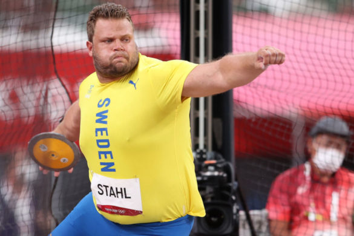
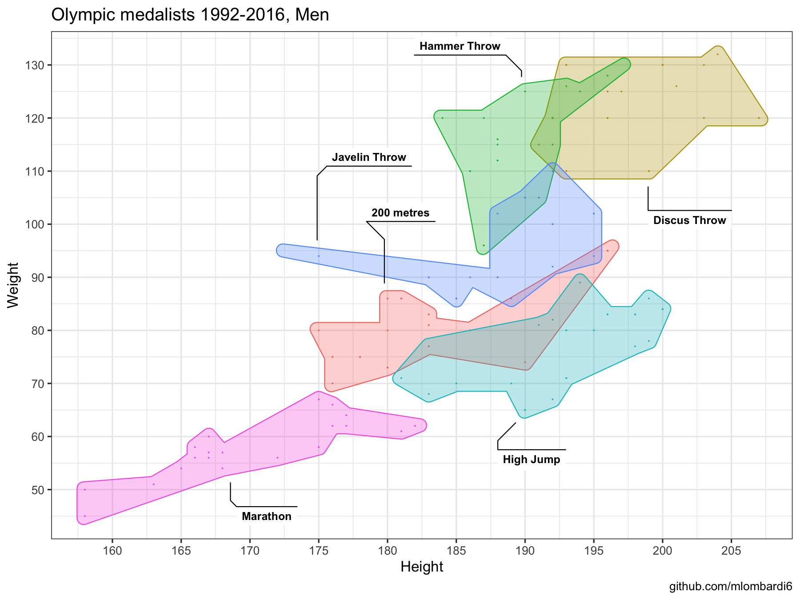

TidyTuesday Link
https://github.com/rfordatascience/tidytuesday/blob/master/data/2021/2021-07-27/readme.md
Data
This is a historical dataset on the modern Olympic Games, including all the Games from Athens 1896 to Rio 2016. Source: Kaggle
| var | desc |
|---|---|
| Name | Athlete’s name |
| Sex | M or F |
| Age | Integer |
| Height | In centimeters |
| Weight | In kilograms |
| Team | Team name |
| NOC | National Olympic Committee 3-letter code |
| Games | Year and season |
| Year | Integer |
| Season | Summer or Winter |
| City | Host city |
| Sport | Sport |
| Event | Event |
| Medal | Gold, Silver, Bronze, or NA |
Anatomy of a discus thrower medalist
Discus medalists similarly to shot put and hammer throwers have an impressive muscle and body structure among track and field athletes. The average height/weight for discus throw medalists between Barcelona 1992 and Rio de Janeiro 2016 was 1.98mt/123kg. On the other end, marathon athletes who require entirely different body attributes for long distance endurance averaged 1.70mt/58kg.
The new olympic champion from yesterday is Daniel Ståhl who won the gold medal for Sweden with a throw of 68.90 metres. The Swedish champion is an impressive 2 meters tall and 155kg athlete. He never looked in trouble for the final win, and finished off by shouting “I’m a Swedish Viking!” in his victory lap.


Discus throw is one of the few modern disciplines who were part of the ancient Olympic and Panhellenic games. Back then the anatomy of a discus thrower might have looked like the famous Discobolus. The first modern Olympic champion in 1986 was Robert Garrett with 1.88mt and 81kg. By 1948 discus throwers medalists passed in average the 100kg mark and continue the upward trend until recent times.